5 估计
- 估计一次操纵的因果效应
- 讨论 frequentist 和 Bayesian estimation 的差异
- 推理 standardized effect sizes 及其优缺点
- 量化变量之间的关系
在我们阅读的每一篇定量论文、参加的每一场定量报告、撰写的每一篇定量文章中，我们都应该问一个问题：estimand 是什么？Estimand 是探究对象——也就是我们组织数据、试图据此做出推断的精确数量。然而，社会科学家太常跳过定义 estimand 这一步。相反，他们会直接描述自己分析的数据和应用的统计程序。如果没有对 estimand 的陈述，读者就不可能知道这些程序是否合适。
—Lundberg, Johnson, 和 Stewart (2021, p. 532)
在本书第一部分，我们的目标是搭建一些理论想法，为我们处理实验设计和规划的方法提供动机。我们介绍了本书的论点，即实验是关于测量因果效应的；并开始讨论本书的几个主题：transparency、measurement precision、bias reduction 和 generalizability。
现在，在第二部分——处理统计主题——我们会把这些想法与一个分析工具箱结合起来，用来估计效应并量化其大小（本章）、对这些估计与总体之间的关系做出推断（章 6），并在更复杂的情境中建立用于估计和推断的模型（章 7）。虽然本书不会对统计学做广泛处理，但我们希望这些章节能为你开始分析实验数据提供一个基础——以及一种有立场的视角，并且重点放在 measurement precision 上。
The Lady Tasting Tea（品茶女士）
现代统计推断的诞生，来自一个古老难题：如何最好地泡一杯茶。统计学家 Ronald Fisher 显然是在一次下午茶聚会上，听到一位女士宣称，她能分辨是茶先倒入牛奶，还是牛奶先倒入茶。Fisher 没有直接相信她的话，而是设计了一套实验和数据分析程序来检验她的主张。
这位女士需要判断一组新的六杯茶，并把它们分成 milk-first 和 tea-first 两组。随后，她的数据会被分析，以判断她正确选择的水平是否超过了 chance 所预期的水平。虽然这个过程现在听起来像是烹饪真人秀里可能出现的普通实验，但它之所以在事后看起来平常，只是因为它为后来科学的开展方式设定了标准。
这个实验中重要且不寻常的部分，是它如何处理潜在的 design confounds，例如哪杯茶先被准备、哪杯茶先被呈现，或者杯子由什么材料制成。先前的实验实践通常会尽量让所有杯子尽可能相同，以减少 confounds 的影响。Fisher 认识到，由于存在未观察到的 confounders，这种策略并不充分。只有通过随机化实验的所有其他方面，他才能对 treatment（milk then tea vs tea then milk）做出强因果推断。我们在 章 1—the Lady Tasting Tea 实验中讨论过随机分派的因果力量；它是随机化实验普及过程中的一个关键 touchstone！
5.1 估计一个数量
如果实验是关于估计效应的，那么我们到底如何使用实验数据来做这些估计？在例子中，我们会设计 Fisher 实验的一个更现代版本（图 5.1）。1
1 理解 Ronald Fisher、Karl Pearson 和其他早期统计推断先驱工作的一个重要背景是，他们都是 eugenics 的坚定支持者。Fisher 是 Cambridge Eugenics Society 的创始主席。Pearson 也许更糟，他是公开的 Social Darwinist，强烈相信 eugenic legislation。无论他们的科学内容如何（而且其中常常是错误的），这些观点在道德上都令人厌恶。
我们的因果理论是：茶的质量会受到 milk-tea ordering 的影响，所以我们会通过对 milk-first 和 tea-first 两种茶质量评分来检验这一点；它可以由类似 图 5.2 的 DAG 表示。我们想 generalize 到的目标总体是所有喝茶者；为此，我们抽取一组喝茶者作为样本。实践中，我们可能会在一家咖啡馆做 field trial，接近顾客并邀请他们参加实验，交换条件是一杯免费茶。虽然这个样本量几乎肯定太小，无法得到精确估计，但为了这个例子，我们会抽样 18 名喝茶者——每个 condition 9 人。
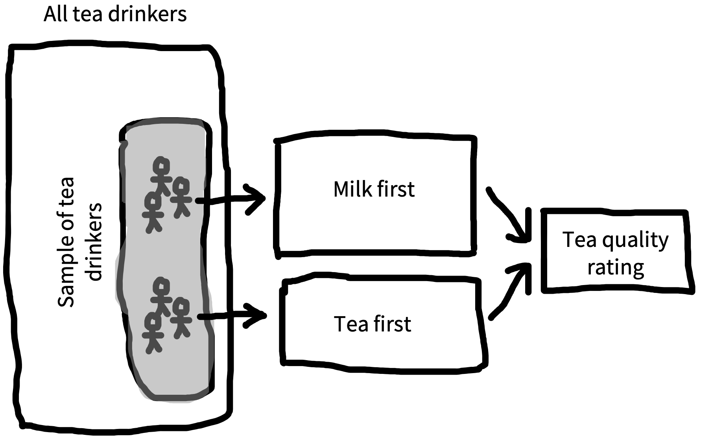
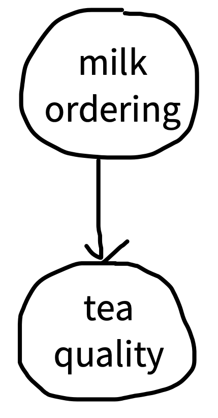
2 从技术上说，随机化实验并不是 Fisher 发明的。也许最早的（某种程度上）随机化实验，是 1700 年代一项关于坏血病治疗的试验 (Dunn 1997)。Peirce 和 Jastrow (1884) 也报告了一个非常现代的随机化刺激呈现用法（通过洗牌）。尽管如此，Fisher 的统计工作确实让随机化实验在科学中普及，部分原因是他把它们与一套分析方法整合了起来。
3 现在我们会假定这些评分只是简单数值，不担心它们来自一个有界 rating scale（例如，不能超过 7）。如果你对 Likert scales（离散数值评分量表的名称；发音为 LICK-ert）感兴趣，我们会在 章 8 中多谈一点。
作为操纵，我们遵循 Fisher，把参与者（他们当然应该 consent to participate）随机分派到两个 conditions 之一：milk-first 或 tea-first。2 这是一个 between-participants design，所以每位参与者只得到一杯茶。他们收到茶并品尝。然后，作为我们的测量，我们要求他们在一个从 1（terrible）到 7（delicious）的连续量表上给茶评分。3
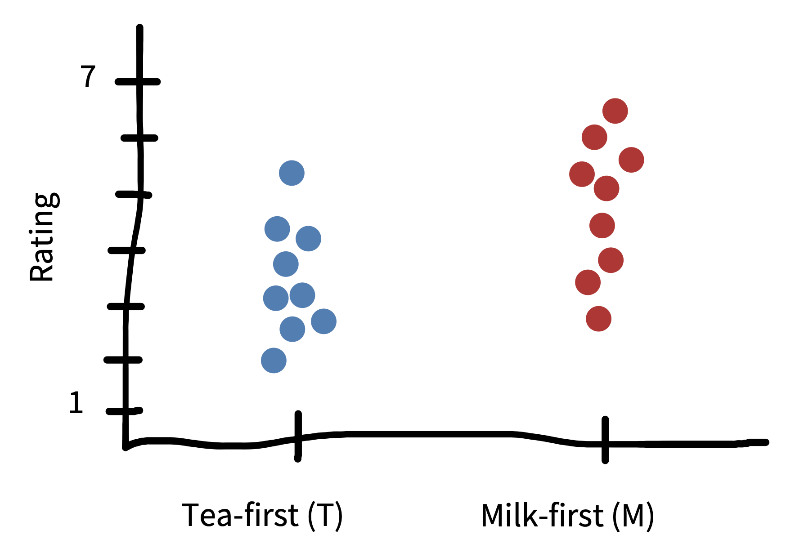
图 5.3 展示了我们实验中的一个示例数据集。最终，我们会想估计 milk-first preparation 对质量评分的效应（我们感兴趣的效应）。但现在，我们的目标是估计 milk-first 时茶的质量 (一些数据提示，这实际上可能是更好的方法，至少对英国喝茶者来说如此; Kennedy 2003)。更正式地说，我们想用 9 个 milk-first 茶判断的样本来估计一个无法直接观察的数字，即所有可能的 milk-first 杯茶的真实感知质量。出于很快会清楚的原因，我们把这个数字称为 population parameter（总体参数）。
我们会尽量少用符号，但一些符号希望能让事情更清楚。我们会用 \(\theta_{M}\)（“theta”）表示我们想估计的参数（population parameter），并用 \(\widehat{\theta}_{M}\) 表示 sample estimate（样本估计量）。4
4 统计学家用这样的 “hats” 表示来自特定样本的估计。记住这一点的一种方式是，“戴帽子的人”戴上帽子，是为了装扮成那个真实数量。
5.1.1 Maximum likelihood estimation（最大似然估计）
好吧，你可能会说，如果我们想估计 milk-first 质量，难道不应该直接取九杯 milk-first 茶评分的平均值吗？答案是：是的。但我们来展开这个选择：把样本均值作为我们的估计 \(\widehat{\theta}_{M}\)，是一种叫做 maximum likelihood estimation 的估计方法的例子。一般来说，maximum likelihood estimation 是一个两步过程。
首先，我们假定一个关于数据如何生成的模型。5 这个模型由某些 population parameters 来指定。在我们的例子中，模型再简单不过：我们只是假定存在某个平均茶质量水平，而测量值围绕它变动。让我们看一下 milk-first condition 中的数据，如 图 5.4 所示。我们的观察值聚集在均值周围，但它们也显示出一些变异。有些更高，有些更低。这类变异是每个数据集的特征。可以通过 probability distribution（概率分布）来概括这种变异；它是一个描述可能数据集性质的数学对象。
5 这里的 “model” 其实是我们在 章 1 中讨论过的那类因果模型的一种形式化实例。当你更深入学习 causal modeling 时，通常要做的是为生成数据集的统计过程定义一个因果 “story”，同时使用 DAGs 和我们下面会定义的概率分布。
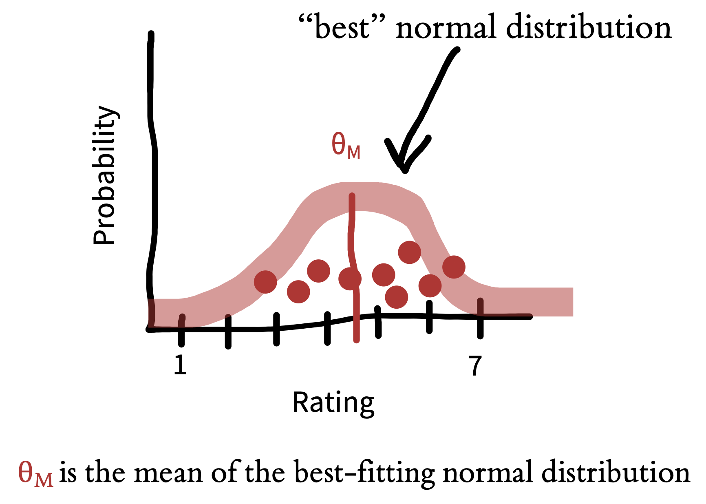
这里我们唯一会讨论的 probability distribution，是无处不在的 normal distribution（有时也叫 “Gaussian distribution”）。Normal distribution 有两个 parameters（定义其形状的数字）：一个 mean 和一个 standard deviation。这两个参数定义了曲线形状。均值（\(\theta_M\)）描述中心在哪里，标准差描述它有多宽。从技术上说，均值是来自这个分布的新样本的 expected value。我们对这些新样本数值的最佳猜测，是它们位于均值处。我们可以通过引入 \(E[M]\) 来更正式地写出这一点，用它表示变量 \(M\) 的 expectation。
标准差 \(\sigma_M\) 则是描述这些样本中预期 variation 的方式。更大的标准差意味着，我们预期样本平均会离均值更远。我们可以形式化地写成 \(\sigma_M = \sqrt{E[(M - \theta_M)^2]}\)：标准差是单个样本与均值之间预期绝对距离；平方和平方根是计算距离所必需的。
用 probability distribution 描述我们的数据集，为我们提供了一种方式：通过分布参数概括观察，并编码一个关于未来观察可能是什么样的假设。我们如何把 normal distribution 拟合到数据上？我们试图找到那些让观察数据尽可能 likely 的 population parameter 值。先从均值开始。
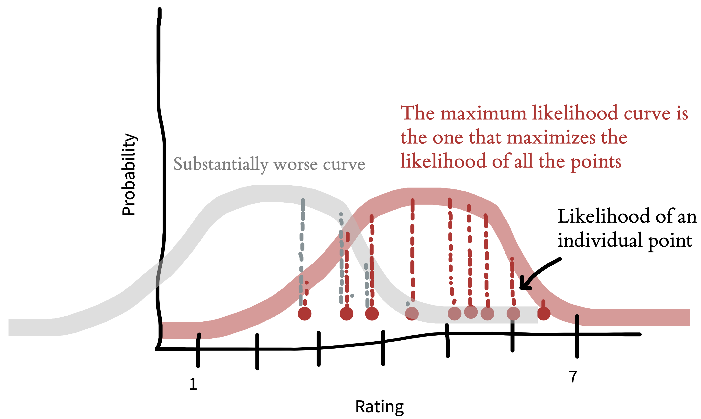
例如，如果我们的样本均值是 \(\widehat{\theta}_{M} = 4.5\)，那么什么底层 \(\theta_{M}\) 值会让这些数据最可能出现？假设底层参数是 \(\theta_{M}=2.5\)。那么，我们的样本均值大这么多就相当不可能。因此，基于这些数据，\(\widehat{\theta}_{M}=2.5\) 是对 population parameter 的一个糟糕估计（图 5.5）。反过来，如果参数是 \(\theta_{M}=6.5\)，那么我们的样本均值小这么多也有点不太可能。让这些数据最可能的 \(\widehat{\theta}_{M}\) 值就是 \(4.5\) 本身：样本均值！这就是为什么在这个案例中，样本均值是 maximum likelihood estimate。
5.1.2 Bayesian estimation（贝叶斯估计）
上面的 maximum likelihood estimation 例子 代表了一种估计参数的常见方法：研究者完全搁置自己关于这些值可能是什么的 prior expectations。这种方法是 frequentist statistical approach 的一个例子；它关注估计程序的长期表现。
这种方法常常是有道理的，尤其是当我们对正在估计的值没有 prior expectations 时。但有时我们确实对这个值有相关信念。例如，在开展茶实验之前，我们并不知道 \(\theta_{M}\) 究竟会是多少，但茶被持续评为非常糟（1）或完美（7）似乎都不太可能。对于会收到什么评分，我们有某种可以称为 weak prior expectations 的东西。
当数据量很小时，这类预期最有用。记住，我们的目标是用样本数据估计 population parameter，而小数据集可能相当 noisy。考虑 prior expectations 可以帮助减弱噪声的影响。例如，如果实验中第一位参与者把茶评为 terrible，我们不会想马上跳到“这茶实际上很糟”的结论。相反，我们可能会推测这位参与者当天心情不好，或者刚刷过牙。另一方面，如果所有参与者都给茶很差的评分，数据就更有说服力；在那种情况下，我们也许会想告诉咖啡馆，他们供应的是不合格的茶。我们的 prior expectations 应在多大程度上调节结论，应随着样本数据量变化；数据很少时，prior expectations 应该有更大影响，但随着收集到更多数据，我们应当给数据更大权重。
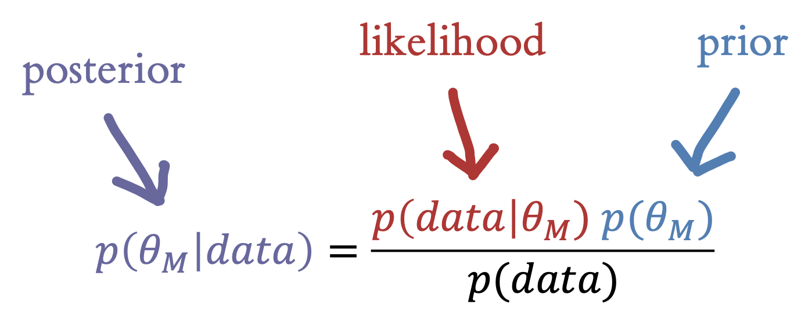
我们如何量化 prior expectations 与当前观察之间的这种权衡？可以通过对 \(\widehat{\theta}_{M}\) 做 Bayesian estimation。Bayesian estimation 提供了一个有原则的框架，用来整合 prior beliefs 和数据。在数据稀疏或 prior beliefs 很强的情况下，这些估计技术会很有帮助。
在 Bayesian estimation 中，我们观察到一些数据 \(d\)，也就是实验中一组 response。现在我们可以使用 Bayes’s rule，这个来自基础概率论的工具，来估计这个数字（图 5.6）。这个等式的每一部分都有名字，值得熟悉。我们想计算的东西 \(p(\theta_{M} |\text{data})\) 叫做 posterior probability——它告诉我们，在观察到数据之后，关于茶质量的 population parameter，我们应该相信什么。6
6 我们把 posterior 标成 purple，表示 likelihood（red）和 prior（blue）的结合。
7 非正式地说，likelihood 只是 probability 的同义词，但在 Bayesian estimation 中，likelihood 是一个技术术语，专门指在我们的假设给定时数据的概率。这种歧义可能有点让人困惑。
分子第一部分是 \(p(\text{data}|\theta_{M})\)，也就是在我们关于参与者能力的假设下，观察到这些数据的概率。这一部分叫做 likelihood。7 这个项告诉我们，我们的假设与观察到的数据之间是什么关系——所以，如果我们认为茶质量很高（比如 \(\theta_{M} = 6.5\)），那么观察到一堆低质量评分的概率就会相当低。
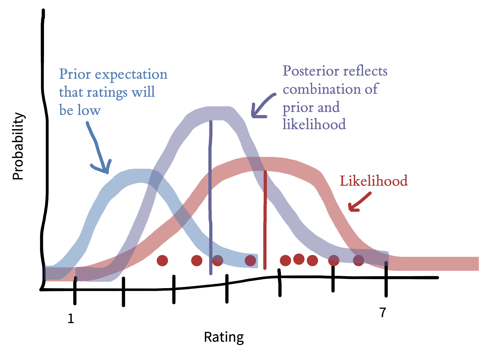
分子中的第二项 \(p(\theta_{M} )\) 叫做 prior。这一项编码我们对茶质量可能分布的信念。直觉上，如果我们认为茶很可能是高质量的，那么要说服我们它很糟，就需要更多证据。相反，如果我们认为它大概很糟，那么几个低评分也许就能说服我们。
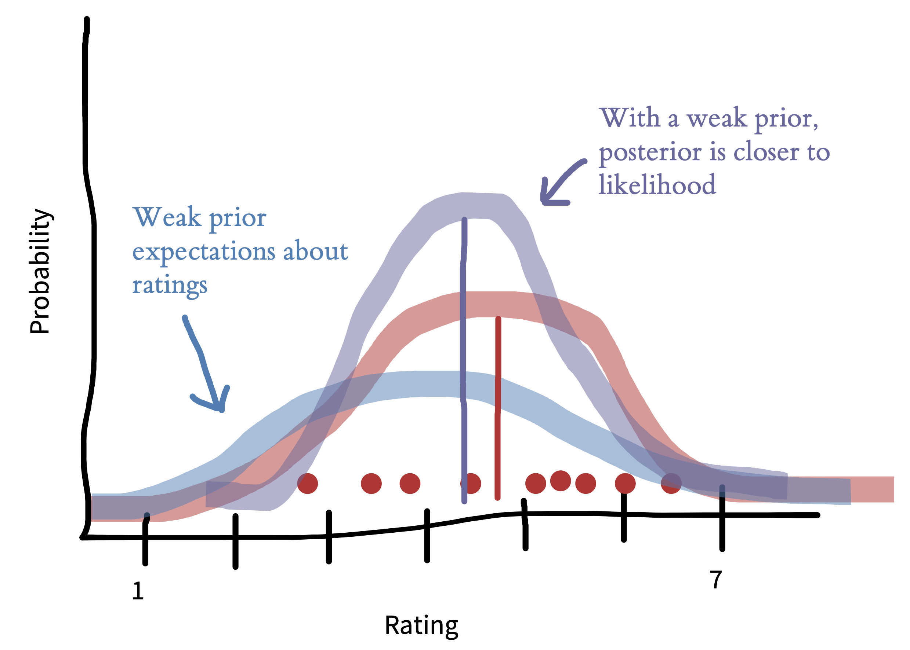
图 5.7 展示了 prior 与数据结合的一个例子。在这个例子中，我们观察到 9 个评分后，看看 prior 会造成什么差异。如果我们一开始就假设茶很可能不好，那么 posterior mean（紫线）相对于 maximum likelihood estimate（红线）会被往下推。这个 prior 只作用在评分上——也就是茶质量的估计。之后，当我们讨论比较 milk-first 和 tea-first 评分以得到 experimental effect 估计时，我们可以考虑把 prior 放在茶的 discrimination（例如 experimental effect）上。
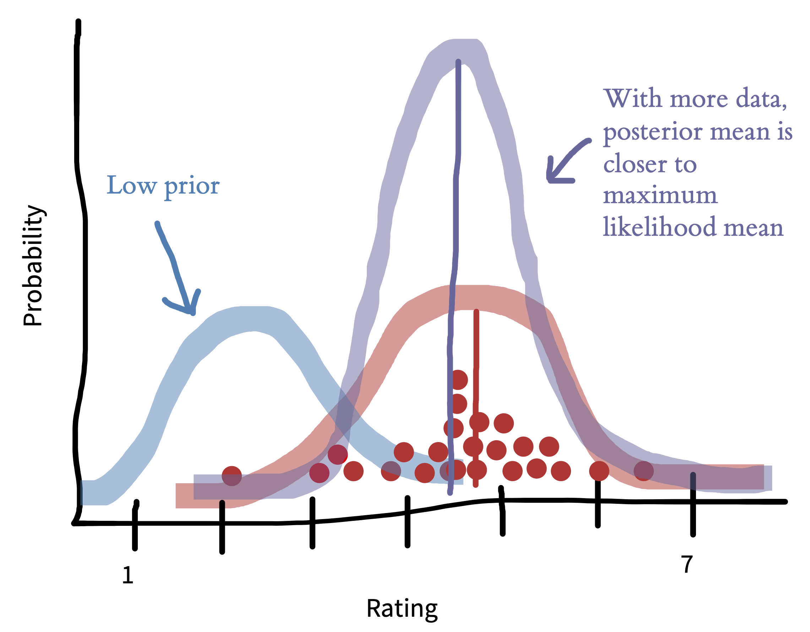
Priors 通常不会像上面展示的那么强。Figure 5.8 展示了当我们有一个更弱的 prior 时图像如何变化；这个 prior 反映的是对评分分布更平、更分散的信念。现在 posterior mean（紫色）更接近 maximum likelihood mean（红色）。这种情况更常见——prior 编码的是一个弱假设：评分不会聚集在量表两端。
当你有更多数据时，prior 的影响也会降低。在 图 5.9 中，prior 与 图 5.7 中相同，但我们有更多数据。因此，posterior distribution 更尖，也更接近数据——prior 带来的差异小得多。
当你有强信念而数据不多时，Bayesian estimation 最重要。这可能是实验中只有少数参与者的情形；但当你有很多数据、却没有太多关于你关心的特定 units 的数据时，使用 Bayesian methods 也很好——而且也许更常见。例如，你可能有一个关于教育干预效果的大数据集，但关于它如何影响某个特定 subgroup 的数据并不多。在 flat prior（让任何值同等可能的 prior）下，或者当数据量趋近无穷时，Bayesian estimates 和 maximum likelihood estimates 会完全一致。
5.2 估计和比较效应
我们现在已经讲过如何用 frequentist 和 Bayesian methods 估计单个参数（milk-first tea 人群的均值）。但请回忆一下，我们真正想做的是估计自己感兴趣的 causal effect，也就是 milk-first vs tea-first effect。在本节中，我们会讨论如何估计这个效应，然后讨论如何使用 effect size measures 来比较不同实验之间的效应（以及这样做的一些优缺点）。8
8 这种方法不必只用于 causal effect；它可以是任何 between-group difference。在当前例子中，我们可以确定地说这个效应是因果的，因为我们的实验使用了随机分派。
5.2.1 估计 treatment effect（处理效应）
我们把关心的因果效应称为 treatment effect。9 实践中，估计 \(\beta\)（一个描述 treatment effect 的参数）会是对我们前面所做工作的一个相当直接的扩展。
9 这是我们的操纵的效应——也就是我们有时称为 “intervention” 的东西。“Treatment” 是来自医学统计的术语，但现在在统计学中使用得更广。
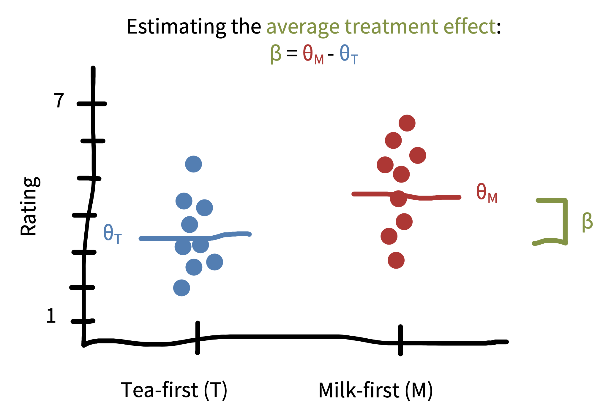
10 为简单起见，我们假定每个 tea group 的标准差相等。
在 maximum likelihood 框架中，我们可以假设每组（milk-first 和 tea-first）的评分都服从 normal distribution，但这些 normal distributions 可能有不同的均值和标准差。扩展上面引入的符号，我们把 tea-first 组的参数称为 \(\theta_{T}\)（均值）和 \(\sigma\)（标准差）。为了估计 treatment effect，我们提出一个模型：milk-first 评分服从均值为 \(\theta_{M} = \theta_{T} + \beta\)、标准差为 \(\sigma\) 的 normal distribution。10 这个等式说的是，milk-first 评分与 tea-first 评分有相同分布，只是平均值移动了 \(\beta\)。这样设定模型后，我们就可以计算 \(\hat{\beta}\)，也就是样本中 treatment effect 的估计。
和单样本情形一样（只估计 milk-first 组的均值），maximum likelihood estimation 随后会通过寻找让数据在假定模型下最可能的 \(\beta\) 值来进行。正如你可能预期的，这个估计 \(\widehat{\beta}\) 最终就是样本均值之差，\(\widehat{\theta}_{M}-\widehat{\theta}_{T}\)。这个差异如 图 5.10 所示。
在 Bayesian 框架中，我们会再次指定一个 prior \(p(\beta)\)，编码我们关于 treatment effect 大小和方向的 prior beliefs。如果我们完全没有 prior beliefs，那么可以指定 flat prior，\(p(\beta) \propto 1\)。11 如果我们相信 treatment effect 很可能有利于 milk-first pouring（\(\beta>0\)），可以指定 prior 是一个以某个正值为中心的 normal distribution（例如 \(\beta=0.5\)）；这个 prior 的标准差会编码我们对 prior beliefs 有多确定。而且，如果我们对 treatment effect 的方向没有 prior beliefs，但认为它不太可能非常大，就可以指定一个以 \(0\) 为中心的 normal prior，其效果是把估计 “shrink” 到更接近 \(0\)。12
11 这个等式说的是，任何 \(\beta\) 值的概率都 “proportional to” \(1\)，也就是说无论 \(\beta\) 取什么值，它都是常数（“flat”）。
12 这里讨论的变异性测量处理的是 statistical uncertainty，也就是反映我们只有有限样本量这一事实的不确定性。如果样本量是无限的，就不会有这种不确定性。不过 statistical uncertainty 只是其中一种不确定性。对一个估计整体 credibility 的更整体看法，还应考虑模型之外的其他东西，例如研究设计问题和 bias。
和上面的例子一样，如果我们有很多数据或 weak priors，maximum likelihood estimates 和 Bayesian estimates 会非常相似。只有当我们有 strong priors 或相对较少数据时，它们才会分歧。不过，我们之所以搭建这两个不同框架，是因为它们提供了非常不同的 inferential tools，下一章会看到这一点。
5.2.2 Effect size（效应量）的测量
一旦我们测量了某个东西，就需要决定如何向他人描述这个效应。有时，我们处理的是相当直观、容易描述的关系。例如，研究者可能会说，收到 milk-first tea 的人，平均比收到 tea-first tea 的人快五分钟喝完茶（即 \(\widehat{\beta} = 5\) 分钟）。时间以分钟和秒这样的单位测量，因此我们对五分钟意味着什么有共同理解。
但如果是参与者对茶质量的评分呢？这些评分来自我们设计的任意 7 点 rating scale。说喝 milk-first tea 的参与者比喝 tea-first tea 的参与者评分高 1 分（也就是 \(\widehat{\beta} = 1\) 分），这是什么意思？它又如何与另一种量表上的 1 分变化相比，例如一个有类似 anchors（“terrible” 和 “delicious”）但使用 100 分评分系统的量表？
为了提供一种描述这些关系的共同语言，一些研究者使用 standardized effect sizes。一种常见的 standardized effect size 是 Cohen’s \(d\)，它提供两个均值之间差异的标准化估计。计算 Cohen’s \(d\) 有很多不同方法 (Lakens 2013)，但所有方法通常都是下面公式的某种变体：
\[ d = \frac{\theta_{M} - \theta_{T}}{\sigma_{\text{pooled}}} \]
其中，均值差（\(\theta_{T}\) 和 \(\theta_{M}\) 之间的差）除以 pooled standard deviation \(\sigma_{\text{pooled}}\)。直觉上，你做的是把研究效应（\(\beta\)）除以——也就是按它缩放——研究中个体之间的变异。13
13 Cohen’s \(d\)，也称为 standardized mean difference（SMD），在更复杂的实验设计中应用起来可能很棘手，例如对每位参与者有多次测量的 within-participant designs。关于这个话题的指导，见 Lakens (2013)。
我们来为自己的喝茶研究计算这个测量。可以直接代入 图 5.10 中看到的估计，并计算观察数据的标准差：
\[\widehat{d} = \frac{\widehat{\theta}_{M} - \widehat{\theta}_{T}}{\widehat{\sigma}_{\text{pooled}}} = \frac{4.5- 3.5}{1.25} = \frac{1}{1.25} = 0.80\] 换句话说，两个 conditions 之间差异的 effect size 是 \(0.8\) 个标准差。这个过程如 图 5.11 所示。
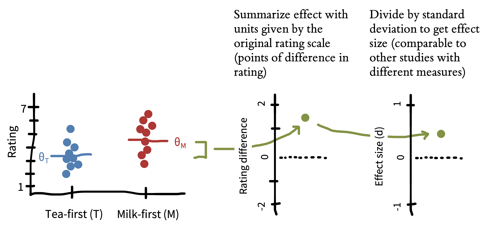
我们先前说过，喝 milk-first tea 的人，其质量评分在 7 点量表上平均高 1 分（\(\beta = 1\) 分）。Cohen’s \(d\) 把我们评分量表的任意单位转换成一个 unitless 指标，它以数据中的变异为单位来测量。你可能会想：“我为什么要用标准差来描述东西？” 关键好处是，它让我们能够比较使用不同测量的研究中的效应大小。
假设我们对茶研究做了一次 replication，并有两个变化：（1）我们研究的是一家美国咖啡馆的顾客，而不是英国咖啡馆的顾客；（2）我们使用 100 分 rating scale，而不是 7 分量表。想象一下，正如我们发现英国参与者在 7 分质量量表上给 milk-first tea 高 1 分，美国参与者在 100 分质量量表上也给 milk-first tea 高 1 分。很明显，由于量表不同，这些效应并不相同。但它们到底有多不同？
一开始，按量表长度进行 normalize 似乎很合理。所以，也许英国实验参与者显示的是 1/7 的评分效应，而美国参与者显示的是 1/100 的评分效应。这种做法的问题在于，它预设来自两个不同 populations 的参与者以完全相同的方式使用两个不同量表！例如，也许美国参与者的判断非常 clumpy，大多集中在 50 附近（也许因为缺乏奶茶经验）。Standardized effect sizes 通过按照数据变异性缩放，绕开了这类问题。
我们来计算 cross-cultural replication 的 effect size。想象喝 milk-first tea 的参与者给出的平均评分是 50/100，而喝 tea-first tea 的参与者平均评分为 49。但如果他们的变异性也相对更低，也许评分标准差只有 5。使用上面的公式：
\[\widehat{d}_{\text{US}} = \frac{\widehat{\theta}_{M} - \widehat{\theta}_{T}}{\widehat{\sigma}_{\text{pooled}}} = \frac{50 - 49}{5} = \frac{1}{5}= 0.2\]
Cohen’s \(d\) 为 0.2 意味着，当茶是 milk-first 时，美国咖啡馆顾客的评分高出 \(0.2\) 个标准差，远小于英国顾客中的 \(0.8\) 个标准差差异。
什么算大效应或小效应，并没有硬性规则，但人们常常回到 Cohen (1992) 建议的标准。按照这些标准，\(d = 0.8\) 是 “large effect”，\(d = 0.2\) 是 “small effect”。但这些 effect size 解读规范有些任意。这里的关键点是，美国和英国顾客在质量评分上的原始分数变化相同（\(\widehat{\beta} = 1\)），而把差异标准化之后，我们就能表达这个差异在英国顾客中更大。
Cohen’s \(d\) 是研究者可以使用的许多 standardized effect sizes 之一。正如 Cohen’s \(d\) 标准化组均值差异，也有一些 generalizations 允许 continuous treatment variables 或 covariate adjustment（例如 Pearson’s r，我们下面会讨论；\(r^2\)；或 \(\eta^2\)）。另外，还有一整套用于 binary variables 之间关系的 effect-size measures（例如 odds ratio）。我们会在全书中使用 effect sizes，但会以 Cohen’s \(d\) 作为例子。14
5.2.3 标准化 effect sizes（效应量）的优缺点
标准化 effect size 有助于说明，7 分量表上的 1 分变化并不等同于 100 分量表上的 1 分变化。但说前者代表 \(0.8\) 个标准差差异、后者代表 \(0.08\) 个标准差差异，就一定更好吗？
Effect sizes 让我们更容易跨研究比较结果。不同研究使用不同测量、不同研究设计和不同 populations。标准化给了我们一种 “common language”，用来描述这些多样情境中的估计关系。当我们想通过 meta-analysis 聚合并比较多个研究中的效应时，这种语言很有帮助。它在规划新研究时也很有帮助。当我们试图弄清楚一项研究需要跑多少参与者时，几乎所有 sample size planning 技术都会使用 standardized effect sizes 来确定需要多少数据才能可靠检测到效应。
不过，标准化 effect sizes 也有局限。例如，如果两个 interventions 在同一个 outcome measure 上产生相同的绝对变化，但研究对象是 outcome 变异性显著不同的不同 populations，那么这两个 interventions 会产生不同的 standardized mean differences (Baguley 2009)（见 章 8 中 深入 框 “Reliability paradoxes!”）。
想象我们再次开展茶实验，但这次使用 decaf tea，并聚焦儿童。也许对儿童和成人来说，milk-first tea 比 tea-first tea 好喝的程度是一样的。但作为一个规律，儿童的反应比成人更 variable。这种更高的变异水平会让我们在儿童中观察到比成人更小的 effect size。回想一下，我们的英国成人 SD 是 \(1.25\)，effect size 是 \(d = 0.8\)。想象儿童的 SD 是 \(2.5\)。在这个情境下，即便茶在成人和儿童中都导致同样的 1 分绝对评分变化，儿童的 standardized effect size 看起来也只有一半大：
\[\widehat{d}_{\text{kids}} = \frac{\widehat{\theta}_{M} - \widehat{\theta}_{T}}{\widehat{\sigma}_{\text{pooled}}} = \frac{5- 4}{2.5} = \frac{1}{2.5} = 0.4\]
这个例子突出了标准化的一些挑战。如果我们关注成人和儿童都显示了 1 分评分水平变化（\(\widehat{\beta} = 1\)）这一事实，就会得出结论：milk-first tea ordering 对成人和儿童同样更好。但如果我们关注 standardized effect sizes，就会得出结论：milk ordering effect 对成人来说是儿童的两倍大。
那么，哪个更好：描述原始测量，还是 standardized effect sizes？ 一般来说，我们的回答是：“为什么不两个都要？” 但如果你只能选一个，我们建议考虑你使用的测量类型。对于那些产生 common measurement units、而且很可能已经在许多研究中被报告的测量，使用 raw scores (Baguley 2009)。例如，如果你的研究使用毫秒这样的物理单位（例如 reaction times）或计数（例如追踪词数这类 outcome 的研究），这些测量在跨研究比较时可能相当有用。报告原始测量也能让你检查测量是否合理——例如，70 毫秒的反应时快得不像人，而 10 秒的反应时可能极慢（至少对许多 speeded tasks 来说如此）。
相比之下，对于测量以原始形式不太可能与其他研究比较，或者本身不太可能有意义的情形，我们建议使用 standardized effect sizes。例如，报告一个 intervention 对原始数学测试分数的效应，只有在读者知道测试有多少题、难度如何等情况下才有意义。在这种读者很难对你所使用的具体测量单位 “calibrated” 的情形中，standardized effect sizes 可能是报告发现的最佳方式 (Kelley 和 Preacher 2012)。
5.3 估计变量之间的关系
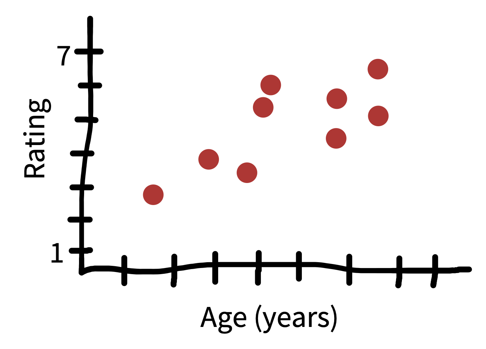
15 记住，这是一个 correlational relationship，这里不可能做因果推断。
到目前为止，我们的重点一直是估计单个效应，但有时我们也想估计两个不同变量之间的关系。扩展我们的例子，图 5.12 展示了品茶者年龄与其 milk-first tea 评分之间的关系。总体上看，年轻人似乎不如年长者喜欢茶。15 我们如何量化这个结果？
我们需要的第一个概念是 covariance。Covariance 捕捉的是，我们预期两个变量会在多大程度上沿同一方向偏离各自均值。这里我们看的是 milk-first tea 评分 \(M\) 和参与者年龄 \(A\)。可以把二者之间的 covariance 写成：
\[\text{cov}(M, A) = E[(M - \theta_M) (A - \theta_A)]\]
这个公式表达的是：每个观察在两个变量上分别偏离其 expectation（均值）多少，而这些偏离量的乘积的期望。Figure 5.13 展示了这些差异；对于每个点，把它们相乘就得到 covariation。16
16 这看起来有点棘手，但实际上与我们已经见过的基本概念非常相关。记得我们介绍标准差时，把它描述为从一个分布中来的新样本与该分布均值之间的预期距离。Covariance 与此非常相关：标准差就是 \(\sqrt{\text{cov}(X,X)}\)，换句话说，是一个变量与自身 covariance 的平方根。
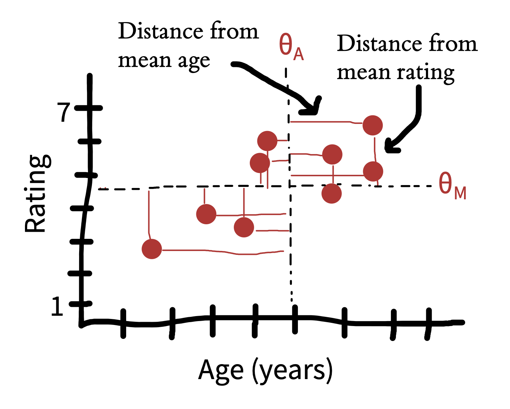
这个 covariance 数字给了我们一个关于年龄和评分 co-vary 程度的估计，但它的单位有点奇怪：很难知道“预期偏离 1 point-year”到底意味着什么。我们可以用一个简单技巧来标准化其单位，把它变成一种很好的 effect size 形式——correlation coefficient（记作 \(r\)）。记住，上面为了创建 effect sizes，我们除以变量的标准差。这里我们要做的，只是除以两个变量的标准差。
\[r_{M,A} = \frac{\text{cov}(M,A)}{\sigma_M \sigma_A}\] 换句话说，两个变量之间的 correlation 就是标准化后的 covariation。
Correlation coefficient 是最常见的变量间关联测量。它的范围从 \(-1\) 到 \(1\)：\(-1\) 表示两个变量完全沿相反方向 covary，\(1\) 表示两个变量完美 covary。相关为 0 表示两个变量之间没有关联。不过，相关为 \(-1\) 或 \(1\) 并不意味着变量具有相同尺度：它只意味着它们 “move together”。
关键的是，correlation 是一种 effect size。Correlations 可以跨不同测量和不同研究比较（包括实验研究和观察性研究），因此是非常有价值的 scale-free comparison tool。17
17 本节描述了一种看待 correlation coefficient 的方式：把它看作标准化的 covariation。关于理解 correlations 的各种不同方式，见 Lee Rodgers 和 Nicewander (1988) 的精彩讨论。
5.4 本章小结：估计
在本章中，我们介绍了根据观察数据估计单个测量和 treatment effects 的想法。这些想法很简单，但它们为 hypothesis testing 和 modeling（接下来两章）奠定了基础。此外，我们搭建了 Bayesian 和 frequentist approaches 之间的区别；下一章会扩展这个区别，因为这些传统提供不同的 inferential tools。
在本章中，你学习了 estimation；而在本书更一般的论证中，我们认为实验的目标是提供一个尽可能精确的 causal effect 估计。心理学作为一个领域，常常被批评过度关注 inference，而过少关注 estimation。在 Psychological Science 期刊中找一篇报告一个实验或一系列实验的文章，并阅读摘要。摘要是否提到对某个特定数量的估计？在研究摘要中报告估计可能有什么好处？
用 New England Journal of Medicine 或 Journal of the American Medical Association 中的一篇论文做同样练习。找一篇论文，检查其中是否提到正在估计某个具体数量。（我们怀疑会有！）思考医学文章与心理学文章之间的这种对比。你如何理解领域之间的这种差异？
一本关于统计学历史和实践的优秀叙事性入门书：Salsburg, Daniel. (2002). The Lady Tasting Tea: How Statistics Revolutionized Science in the Twentieth Century. Macmillan.
一本采用与 chapters 5—7 类似方法的开源统计学教材：Poldrack, Russell A. (2024). Statistical Thinking for the 21st Century. Available free online at https://statsthinking21.org.